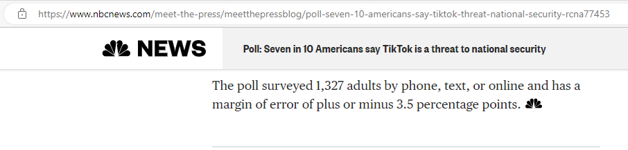

Course Announcements
Welcome to Week 1: Introductory Statistics; Correlation and Regression
Great Students,
Greetings to everyone.
Welcome to Module 1.
In this module, we shall discuss Introductory Statistics. Then, we discuss Correlation and Regression.
For this announcement, let us focus on Introductory Statistics.
Questions for Thought:
(1.) Did you register for this course?
(Of course...Mr. C, what kind of question is that? Why did I have access to the Canvas course if I did not register for it?)
Are you familiar with any of these?
Name:
Date of Birth:
Age:
Address:
...among others
All of the information you submitted when you enrolled in BRCC or any other academic institution is known as Data.
You provided these data to BRCC.
Have you ever wondered: what does BRCC do with these data?
(2.) Some of you are on social media platforms: YouTube, Facebook, Twitter, TikTok, Instagram, Snapchat among others.
You gave these platforms your data when you registered for their services.
Have you asked yourself: what do these platforms do with my data?
(3.) In your daily conversation/interaction/communication with people, have you discussed: race, gender, color, age,
religion, temperature, height, weight, number of people, number of something, etc.? You have discussed data.
Statistics is all about data:
Data Collection: How do you collect data?
Data Organization: What do you do with the raw data? Is it not better to organize it before you use it?
Data Presentation: What are the several tools to present this data so it makes meaning to everyone?
Data Analysis: How do we analyze this data? What evidence/information/results can we get by analyzing the data? How do we use the results of the analysis?
Data Interpretation: After analyzing the data, do we need to use our results to make the right decision and the right
conclusion?
Welcome to Introductory Statistics.
May you please:
(1.) Click the Week 1 module.
(2.) Review the Overview and Objectives.
(3.) Review the Readings/Assessments.
(4.) Complete the assessments initially due this week.
(5.) Participate in the Week 1 Discussion.
(6.) Attend the Live Sessions/Office Hours for this week.
Should you have any questions, please ask. I am here to help.
Thank you.
Samuel Chukwuemeka
Working together for success
Welcome to Week 2: Descriptive Statistics; Probability
Great Students,
Greetings to everyone.
Welcome to Module 2.
Last week, we discussed Introductory Statistics and Correlation and Regression.
We noted several terms used in data collection, data organization, and data presentation.
This week, we shall discuss the first part of data analysis.
When we collect data, organize it, and present it, what else can we do with the data?...Analyze it and note the results of the analysis.
We shall descriptively analyze data into:
Measures of Center
Measures of Spread and
Measures of Position.
Focusing on the Measures of Center; let us begin with this story.
Yes, I tell stories too 😊
It was a Saturday
A family of the Dad, Mom, Daughter, Son
The two children are in middle school.
The Dad and Mom were reviewing the notes of their children
The children were reading books.
All of them were in the living room at home.
Dad: Elijah
Son: Yes, Dad
Dad: Esther
Daughter: Yes, Dad
Dad: A philanthropist wanted to buy shoes for the motherless and fatherless children at an orphanage.
There were 300 children at the orphanage.
He arrived at the orphanage and asked for a shoe size.
What shoe size should the director recommend?
Son: He asked for just a shoe size...
Rather than shoe sizes?
... continue with the rest of the story
Welcome to Descriptive Statistics.
This week, we shall also discuss Probability, and the applications of Probability.
If you are not yet married, may I advise you to review this application of probability and consider it?
I am not trying to influence you in any way. I am only asking you to consider this application of probability which may be
your first time of learning it?
Besides, remember that one of the reasons for analyzing data is to make a good decision and a good conclusion.
Please review: Probability in Biology by answering this question.
People who inherit one sickle cell gene and one normal gene have sickle cell trait (SCT).
People with SCT usually do not have any of the symptoms of sickle cell disease (SCD), but they can pass the trait
on to their children.
[What is Sickle Cell Trait?
(https://www.cdc.gov/ncbddd/sicklecell/traits.html)]
Sickle cell disease (SCD) is a group of inherited red blood cell disorders.
Red blood cells contain hemoglobin, a protein that carries oxygen.
Healthy red blood cells are round, and they move through small blood vessels to carry oxygen to all parts of the body.
In someone who has SCD, the hemoglobin is abnormal, which causes the red blood cells to become hard and sticky and look
like a C-shaped farm tool called a sickle.
The sickle cells die early, which causes a constant shortage of red blood cells.
Also, when they travel through small blood vessels, they get stuck and clog the blood flow. This can cause pain and
other serious complications (health problems) such as infection, acute chest syndrome and stroke.
[What is Sickle Cell Disease?
(https://www.cdc.gov/ncbddd/sicklecell/facts.html)]

A man and a woman wants to marry.
Both have the sickle cell trait (SCT).
They do not know about Probability in Biology, but they saw this diagram at the CDC’s website.
They know you took a Statistics class with Mr. C and that you might help explain the diagram.
(a.) Using a Tree Diagram and/or a Punnett Square, explain the diagram to the man and his fiancée.
Include the concept of Probability in your explanations. Assume they intend to have four children.
(b.) Should they get married or not? Advise them.
(To see my advice, please review the Applications of Probability)
Welcome to Probability.
May you please:
(1.) Click the Week 2 module.
(2.) Review the Overview and Objectives.
(3.) Review the Readings/Assessments.
(4.) Complete the assessments initially due this week.
(5.) Participate in the Week 2 Discussion.
(6.) Attend the Live Sessions/Office Hours for this week.
Should you have any questions, please ask. I am here to help.
Thank you.
Samuel Chukwuemeka
Working together for success
Welcome to Week 3: Probability Distributions
Great Students,
Greetings to everyone.
Welcome to Module 3.
Last week, we discussed Descriptive Statistics and Probability.
This week, we shall extend our study on Probability by determining the probability distributions of events.
These include the discussions on/study of: Probability Distribution, Binomial Distribution, and Normal Distribution among others.
Further, we shall extend our study on Probability Distributions by determining the Sampling Distribution of a statistic.
For this announcement, let us focus on the Normal Distribution.
Would you like to do an Introductory Statistics activity?
Think about this activity for a moment before you do it.
Statistics Activity: (Preferably discussed in a traditional classroom)
Variable to survey: Height
Minimum Sample Size: 30
(1.) Visit a retail store say Walmart Supercenter on a Saturday afternoon (that is not a game day).
(2.) Randomly select any five aisles in the store. Survey everyone you see in those aisles.
In other words, ask anyone you see in those aisles to tell you their heights.
Ensure you survey at least 30 people. If the count of the number of people in the 5 aisles you randomly selected is not
at least 30, please select more aisles as applicable.
Document your data accordingly.
(3.) Label your data accordingly/completely: Heights of Customers at Name of the Walmart Supercenter on the day/date from what time to what time?
Prepare a Frequency Distribution Table of your data.
(4.) Using a graphing utility, draw a Histogram of your data.
Questions for Thought:
(1.) Why did we choose to ask people about their heights?
In other words, why did we choose a continuous variable?
In choosing a continuous variable, why did we choose height?
(2.) Why was Saturday afternoon that is not a game day, recommended?
(Hint: There is a high probability of seeing all age groups: children/youths/adults/seniors during that specific day and time.)
(3.) What sampling technique(s) was/were used?
(4.) What topic/part of Introductory Statistics was done as regards making a frequency table?
(5.) (a.) What topic/part of Introductory Statistics was done regarding the drawing of a histogram of the data?
(b.) What is the shape of the histogram?
(6.) If this survey was not taken on a Saturday afternoon, what do you think would be the shape of the histogram?
(Hint:Comparable: Imagine taking the survey of the heights of basketball players in a locker room just before/after a game night: the distribution of the heights on a histogram will definitely be a left-skewed distribution. It will not be a normal distribution. Do you see the reason for Saturday afternoon? We want to get a normal distribution).
(7.) Have you heard about, or are you in favor of curving grades?
But why would professors curve grades to look like a normal distribution?
Very few students get A's and F's (left and right tails of the distribution)
Few students get B's and D's.
Most students get C's (the middle of the distribution: 68% of the Empirical Rule)
In as much as I do not agree with curving grades, (there is no need because I give all my students a lot of opportunities to succeed and would like them to get their true grades), this example illustrates an application of the normal distribution.
There are more examples.
Welcome to the Normal Probability Distribution.
Welcome to Probability Distributions.
May you please:
(1.) Click the Week 3 module.
(2.) Review the Overview and Objectives.
(3.) Review the Readings/Assessments.
(4.) Complete the assessments initially due this week.
(5.) Participate in the Week 3 Discussion.
(6.) Attend the Live Sessions/Office Hours for this week.
Should you have any questions, please ask. I am here to help.
Thank you.
Samuel Chukwuemeka
Working together for success
Welcome to Week 4: Inferential Statistics and Hypothesis Testing
Great Students,
Greetings to everyone.
Welcome to Module 4.
Last week, we discussed Probability Distributions.
A form/type of probability distribution is sampling distribution which studies how the statistic of samples taken from a population relates to the population parameters.
This week, we shall discuss Inferential Statistics and Hypothesis Testing.
Let us focus on Inferential Statistics for this announcement.
We shall use samples to estimate populations.
Specifically, we shall use a sample statistic to estimate a population parameter.
Do you have any favorite News Media? Or do you think any/some of them are fake news?
(Lol ...I did not mention any name so I do not get in trouble. 😊 But anyway, let's get back on track. Please note: I am not endorsing any of them. I am only using them to teach you topics in Statistics.)
Let us review some of the results of the surveys/polls conducted by these New Media. No worries, I shall avoid controversial topics.
1st Example: Using Sample Proportion to Estimate Population Proportion
Proportion deals with Fraction which deals with Percentage.

Notice the result of the poll: Poll:
Seven in 10 Americans say TikTok is a threat to national security.
Keep in mind that 7 in 10 Americans means 70% of Americans.
But come on, do you think NPR/PBS NewsHour/Marist Poll surveyed all American adults?
If they did not survey all American adults, why would they say 7 in 10 Americans?
By the way, this is the data collection process:

So, would it not be better if they specified: 70% of 1327 = 0.7(1327) = 928.9 ≈ 929 adults...the
70% here is a
statistic (numerical summary of a sample)
But they specified 70% of American adults ... the
70% here is a
parameter (numerical summary of a population)
Noticed how NPR/PBS NewsHour/Marist Poll used the results of a sample to
infer on a population?
Notice they included: the result of the poll, the sample size, and the margin of error.
But they did not specify an important measure. We shall find out that measure in the second example.
Let us review another example.
2nd Example: Using Sample Mean to Estimate Population Mean
Mean is the same as Average.

The result of the survey states that:
Americans are spending 4 hours, 25 minutes each day on their phones.
They only surveyed 1000 Americans.
They did not mention:
average... but they should have mentioned it.
Why would they not write:
1000 Americans are spending an average of 4 hours, 25 minutes each day on their phones?
But, rather they used the results of a sample of Americans to make a generalization about the population of Americans.
Though they missed the wording:
average in the conclusion, they did not omit an important measure: the
confidence level
They included the result of the survey, the sample size, and the margin of error, and the confidence level.
Please note: This is a learning process, not an avenue to criticize reports.
Some of you may be journalists and may report polls/surveys. Please make sure you do not omit any necessary measure.
Welcome to
Inferential Statistics.
May you please:
(1.) Click the Week 4 module.
(2.) Review the Overview and Objectives.
(3.) Review the Readings/Assessments.
(4.) Complete the assessments initially due this week.
(5.) Participate in the Week 4 Discussion.
(6.) Attend the Live Sessions/Office Hours for this week.
Should you have any questions, please ask. I am here to help.
Thank you.
Samuel Chukwuemeka
Working together for success
Welcome to Week 5: Hypothesis Testing
Great Students,
Greetings to everyone.
Welcome to Module 5.
Last week, we discussed Inferential Statistics and Hypothesis Testing.
This week, we shall continue our study on Hypothesis Testing.
Specifically, we shall test hypothesis about: two independent population means, dependent population means/matched
pairs, and correlation among others.
May we review these two scenarios:
Scenario 1: Paul was curious about the mean credit scores of men and women.
He visited the Town of Okay, Oklahoma and gathered two random samples: the credit scores of 50 men and 50 women.
Scenario 2: Paul was curious about the mean credit scores of married couples.
He visited the Community of Money, Mississippi, randomly selected 50 families, and asked for each of the credit scores of the husband and wife.
Do you notice any difference(s) between the two scenarios?
Which scenario do you think deals with: two independent populations? two matched pairs?
How do we test hypothesis for both scenarios?
...and more
Welcome to Hypothesis Testing.
May you please:
(1.) Click the Week 5 module.
(2.) Review the Overview and Objectives.
(3.) Review the Readings/Assessments.
(5.) Complete the assessments initially due this week.
(5.) Participate in the Week 5 Discussion.
(6.) Attend the Live Sessions/Office Hours for this week.
Should you have any questions, please ask. I am here to help.
Thank you.
Samuel Chukwuemeka
Working together for success